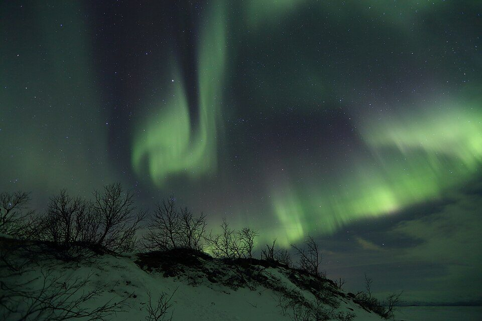

Auroras, rainbows and lights in the sky
Northern lights, double rainbows, halos, the green flash and mirages: the physics behind the atmosphere's light shows.


The atmosphere does not just make clouds and rain: it is also a giant laboratory of light. Water droplets, ice crystals, layers of air at different temperatures and particles from the Sun create some of nature's most beautiful displays.
Auroras
The Sun constantly sends out charged particles, the solar wind. The Earth's magnetic field deflects them, but near the poles some slip through and collide with gases in the atmosphere 100 to 300 km up, which glow like the gas in a fluorescent tube. These are the auroras: the northern lights in the north and the southern lights in the south.
- Green, the most common colour, comes from oxygen at around 100–250 km.
- Red comes from oxygen higher up.
- Blues and violets come from nitrogen.
Normally they are seen in a ring around the poles: Norway, Iceland, Finland, Canada or Alaska. But when the Sun hurls out a big coronal mass ejection, auroras spread towards the equator. On 10 and 11 May 2024, the strongest geomagnetic storm in twenty years painted the sky pink and violet across the whole of Spain, and it happened again that October. Many phone cameras captured them better than the eye.
The rainbow
It appears when the sun is behind you and rain in front. Each drop acts like a prism: light enters, reflects off the back of the drop and comes out split into colours, because each colour is bent at a slightly different angle. The arc always forms at 42 degrees from the point directly opposite the Sun, which is why you can never reach its end: it moves with you. Everyone sees their own rainbow.
Sometimes a double rainbow appears: the second arc is fainter and has its colours reversed, because the light has reflected twice inside the drops. The dark band between them is called Alexander's band. From a plane you can see a rainbow as a full circle.
Halos and false suns
When there are high clouds of ice crystals, such as cirrus, light from the Sun or Moon is bent into a halo: a ring 22 degrees around it. Sometimes two bright spots appear on either side, sundogs, which look like false suns.
The green flash
Just as the last sliver of the Sun disappears below a clear horizon, especially at sea, a green spot sometimes flashes for a second or two. It is produced by the atmosphere acting as a prism and separating the colours. Jules Verne devoted a novel to it, The Green Ray (1882).
Mirages
When there are layers of air at very different temperatures, light bends. On a very hot road there seem to be puddles of water: it is a reflection of the sky, an inferior mirage. Over cold seas, distant ships or coasts sometimes appear to float or stretch into towers: this is the fata morgana, which may explain legends such as the Flying Dutchman.
Other oddities
- Noctilucent clouds: ice clouds in the mesosphere, 80 km up, glowing electric blue after sunset on summer nights.
- St Elmo's fire: a bluish glow on ships' masts or aircraft wings during storms, caused by electricity in the air. Sailors saw it as a sign of their patron saint's protection.
- Brocken spectre: a climber's giant shadow cast onto fog, surrounded by a halo of colours.
Videos to understand it better
- Spectacular Norway Northern Lights | National GeographicNational Geographic · 4.6M views
- Space Weather and Earth's AuroraNASA Video · 1.6M views
Videos are from YouTube and belong to their creators. They only load when you click them. See all videos →